hi, i'm grace 💕
Product Designer who builds · UX Engineer
product design · interaction design · prototyping in code
Designer who builds. I work from first sketch to shipped pixels, shaping how people discover, personalize, and enjoy the software they use every day — currently designing Windows experiences at Microsoft, previously at the MIT Media Lab.
My passion lies in interaction design, tangible user interfaces, and the craft layer where design becomes code. I prototype to think, and I am deeply interested in creating meaningful human–computer experiences, especially pushing for ubiquitous computing.
projects
things i've built and shippedselect a card to open a project window
 Windows Privacy Settings
Privacy controls that make app access clear, shipped across 4M+ monthly active devices.
Windows Privacy Settings
Privacy controls that make app access clear, shipped across 4M+ monthly active devices.
 Corner Cafe
An order-ahead cafe workflow, reusable design system, and working prototype.
Corner Cafe
An order-ahead cafe workflow, reusable design system, and working prototype.
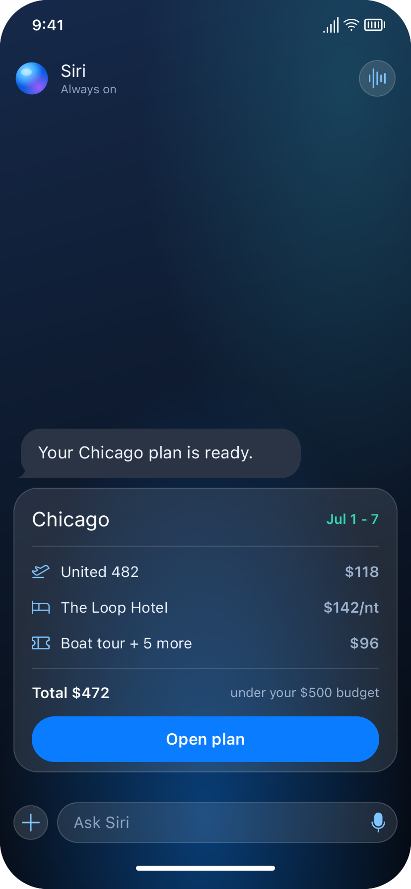
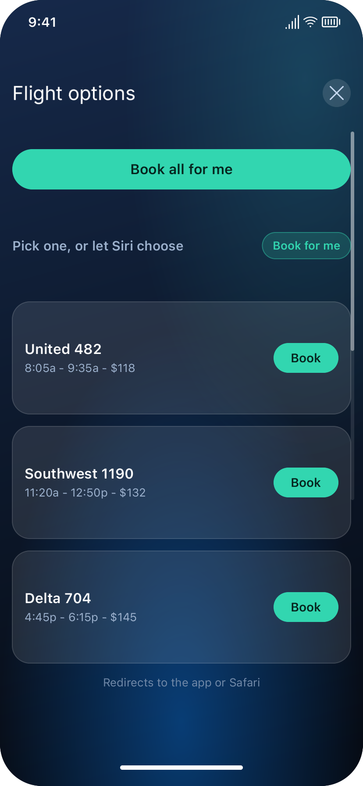
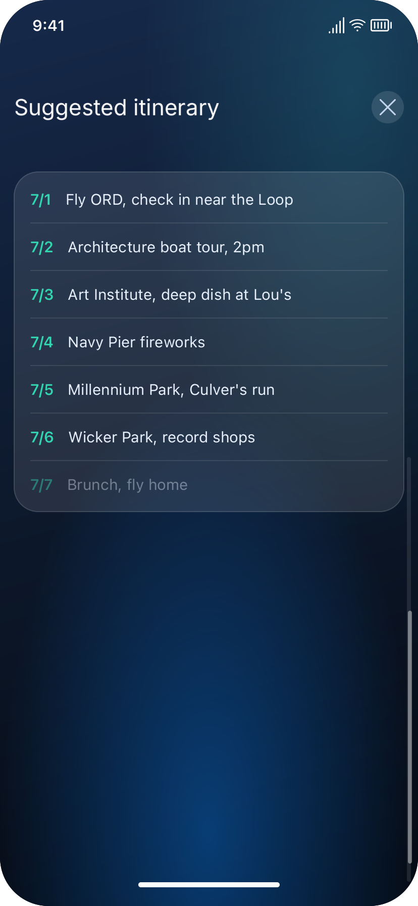
Siri Agent An iOS agent that turns goals into clear, permissioned actions across apps.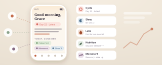
Magdalene X² A health-intelligence prototype connecting labs, cycle, sleep, nutrition, and fitness.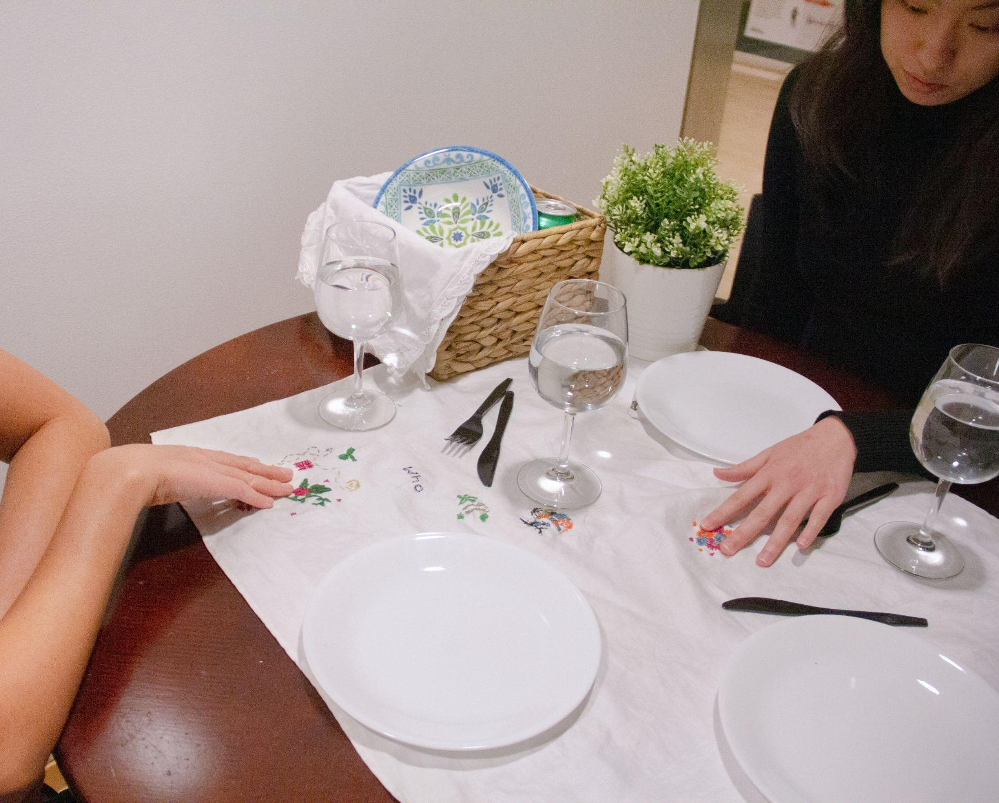
Sonic Stitches An embroidered tablecloth that plays stories of food and home through touch.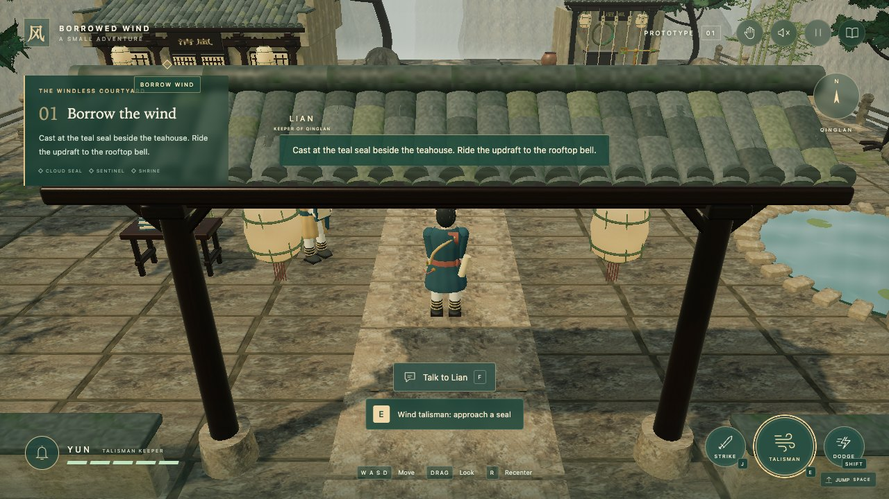
Borrowed Wind A 3D adventure with wind-powered exploration, sword combat, and branching choices.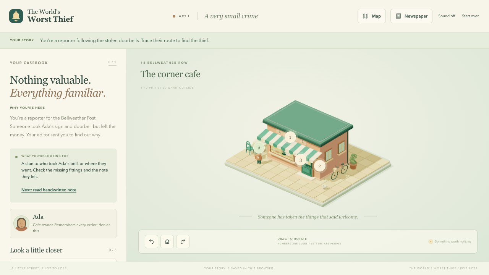
Bellweather Row A neighborhood mystery with explorable 3D scenes, clues, and choices that shape the ending.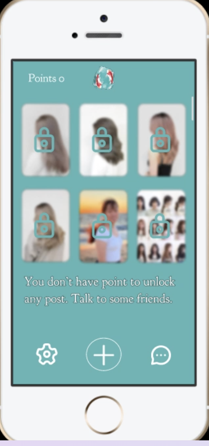
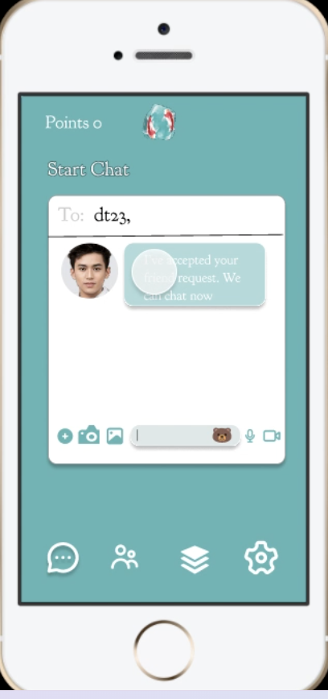
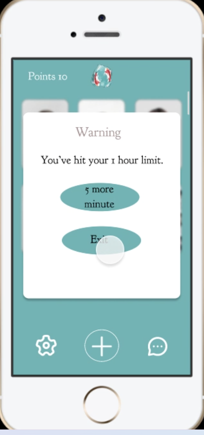
Fritter A social feed redesign that gives readers control over curation and browsing time.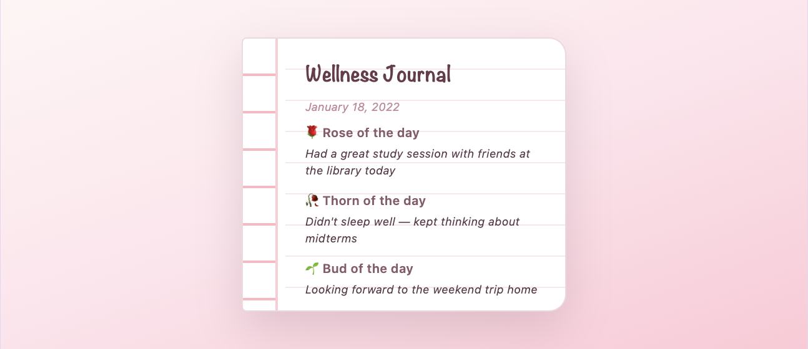
Yours, Truly A wellness journal for daily reflections, mood tracking, and private entries.my journey as a Christ follower
what grounds and guides me
"For I know the plans I have for you, declares the Lord, plans to prosper you and not to harm you, plans to give you hope and a future."
Before anything, I am first and foremost a Christian. My faith is the foundation of who I am and how I approach my work. It shapes how I build, collaborate, and serve others through technology.
"Whatever you do, work at it with all your heart, as working for the Lord, not for human masters."
I believe that every line of code can be an act of stewardship — using the gifts and talents I've been given to make a positive impact in the world.
In this specific season, God is fine-tuning my heart and making it align more with His. He has shown me how perfect love can cast out all fear, and instead make room for joy, peace, and compassion.
WHAT IF? A PLACE FOR THE NOT-YET.
Before the product,there's a scribble.
My unbuilt concepts, design experiments,
and my product visions for the future.
THE COLLECTION
Small Wins Diary
not a finished story. just a few pages of mine.
Some days are a milestone. Some days are just showing up.both belong here.